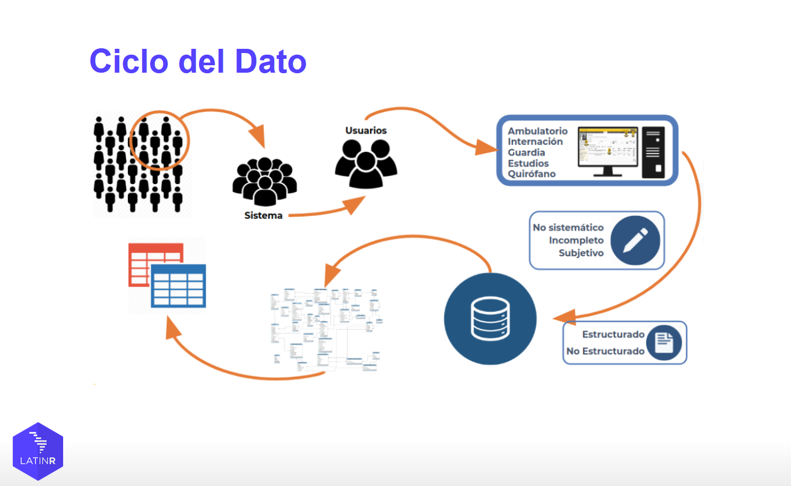

María Nanton
Home
Posts
Talks/workshops
CV
Talks, Workshops, and Courses
Transforming Public Health Data Management (UseR 2025)
The Health Information and Statistics Office within the Ministry of Health of Buenos Aires, Argentina, faced some key and unexpected challenges in its first year as an…
Aug 1, 2025
Mastering Shiny Bookclub
Along with
R en Baires
we co-organized and launched a book club for
Mastering Shiny
by Hadley Wickham. The goal of this initiative was to explore a selection of chapters…
Mar 11, 2025
Workshop - NA worries! Learn to validate data with R
In this session, we explored some of the best tools for validating tabular data in R.
Feb 19, 2025
R in a Network (R en Red)
In this meetup co-organized between R en Buenos Aires and RLadies Buenos Aires we shared with attendees different ways to get involved in the R user community by developing…
Dec 20, 2024
Using R for Automating Administrative Procedures (LatinR 2024)
For LatinR 2024, together with Ariana Bardauil and Manuel Rodríguez Tablado, we presented “Experiences in Using R for Automating Administrative Procedures: Cost Recovery in…
Nov 20, 2024
Open Science 101 at University of the Andes
Sabrina López, José Luis Villca Villegas, and I shared MetaDocencia’s work virtually at the
University of Los Andes
in Colombia. This was the first of a two-part virtual…
Nov 19, 2024
ALTa Ciencia Abierta (Latin America Transforms to Open Science)
The ALTa Ciencia Abierta course is designed to provide a comprehensive introduction to open science practices, focusing on key topics like reproducible research, open data…
Jun 20, 2024
Panel - Challenges and Strategies in Creating Healthcare Datasets for AI (JIS Summit 2023)
I participated in the panel “Challenges and Strategies in Creating Healthcare Datasets for Artificial Intelligence Tools”. Santiago Esteban, MD, MPH, MBA, a member of CIIPS…
Nov 3, 2023
Become a R Contributor. Adding translations to base R (LatinR 2023)
In our talk “Become an R Contributor: Contributing translations to R base” with Paola Corrales we presented the process of adding translations to base R via weblate.
Oct 19, 2023

Data Science with R for Public Health Impact. A Tidyverse Experience in Pregnancy Detection (LatinR 2022)
Together with Sabrina Laura López, Carolina Mengoni Goñalons and Manuel Rodríguez Tablado we presented “Experiences in Using R for Automating Administrative Procedures: Cost…
Nov 10, 2022
Geographic Data for Public Health Decision-Making for COVID-19 Pandemic (FOSS4G 2021)
In our talk “
The Importance of Geographic Data for Public Health Decision-Making During the COVID-19 Pandemic: The Experience of the Health Information and Statistics…
Oct 1, 2021
From Social Sciences to Data Science
From RLadies Buenos Aires along with the Social Innovation Hub (NIS) we organized this talk with four graduates from Social Sciences-related fields who work in data science.
Sep 22, 2021
Workshop - Data-Informed Decision Making. The Role of Data Science in Health (JIS 2020)
We developed and delivered an introductory
workshop
to Data Science for physicians and decision-makers as part of the
Health Informatics Conferece
organized by the Health…
Nov 4, 2020
Workshop - Introduction to Tidyverse (Women in Bioinformatics and Data Science)
In this tutorial, along with Jimena Saucedo we gave an introduction to the use of
R
and of
Tidyverse
for data manipulation with dplyr and visualization with ggplot2.
Sep 24, 2020
Workshop - Visualizing Text Data
Over 60 people joined R-Ladies Buenos Aires’ workshop where I taught how to visualize text data.
Jun 2, 2020
No matching items